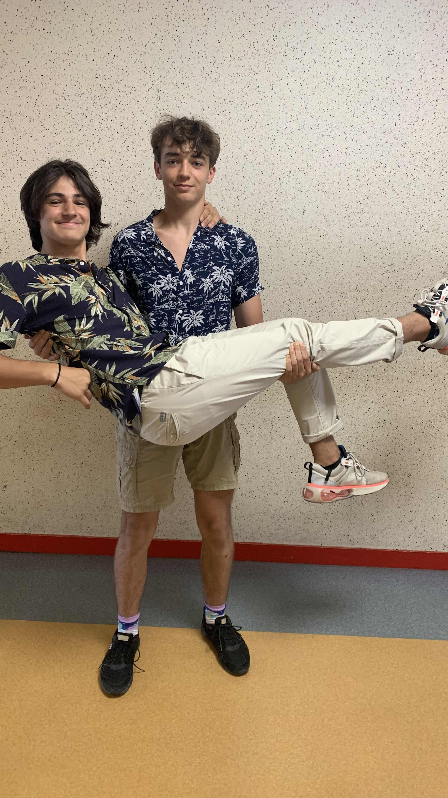

Il était une fois deux jeunes garçons, Matthieu et Guillaume, qui se sont rencontrés en classe de CM1 (2015). Au début, ils étaient simplement des camarades de classe, mais au fil du temps, leur amitié est devenue de plus en plus forte. Guillaume était passionné par l'informatique et la programmation depuis son plus jeune âge. Il aimait créer des jeux et des sites web. Matthieu, quant à lui, était plus attiré par le sport et la découverte de nouvelles aventures. Au fil des années, Matthieu et Guillaume ont partagé de nombreuses aventures ensemble. Ils ont exploré des forêts, escaladé des montagnes et découvert de nouveaux endroits passionnants. Malgré leurs intérêts différents, leur amitié restait solide.  Lorsqu'ils sont arrivés en classe de 2nde, Matthieu et Guillaume ont découvert leur passion commune pour la musculation et la remise en forme. Ils ont commencé à aller à la salle de sport ensemble, se motivant mutuellement pour atteindre leurs objectifs et rester en forme. Mais ce n'était pas tout. Leur intérêt pour l'informatique et la programmation les a également rapprochés. Ils ont commencé à travailler sur des projets de sites web ensemble, combinant leurs compétences en design et en développement pour créer des sites uniques et fonctionnels. Au fur et à mesure que le temps passait, Matthieu et Guillaume sont devenus les meilleurs amis. Leurs aventures, leurs rires grace au Fete organniser et leur soutien mutuel ont créé des liens indéfectibles entre eux. Ils se sont soutenus dans les hauts et les bas de la vie, et leur amitié est devenue une véritable source de bonheur et de réconfort. Et ainsi, Matthieu et Guillaume ont continué leur parcours ensemble, partageant leur passion pour la programmation, l'aventure et l'amitié. Leurs histoires se sont entrelacées, créant des souvenirs inoubliables et une amitié qui durera toute une vie.